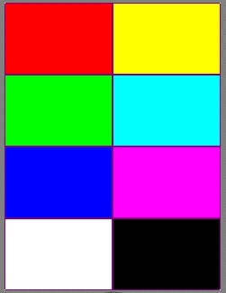

This application provides a battery of tests to help you check the capabilities and limitations of a mobile device.
|  |
The code for this application is available from our Code repository.
When you run this application on a mobile device it will begin running through a series of tests. The application periodically prompt for user input. Device capabilities checked by the tests include:
Press 0 to exit the application.
* Some Java phones do not support battery charge level detection and keypad locking so these tests will fail on those devices.